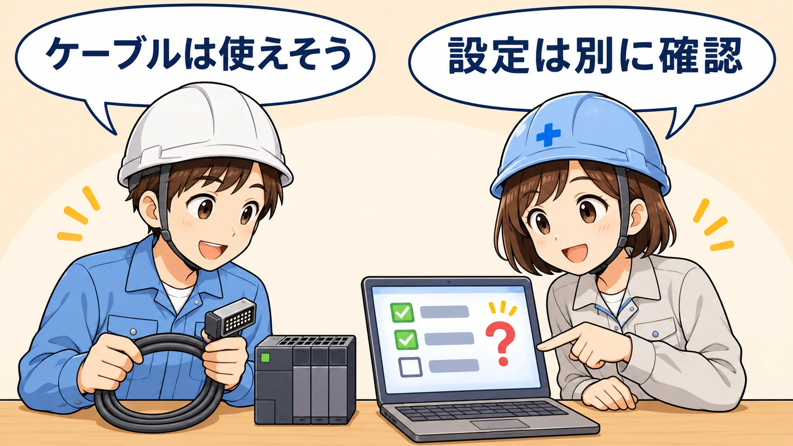
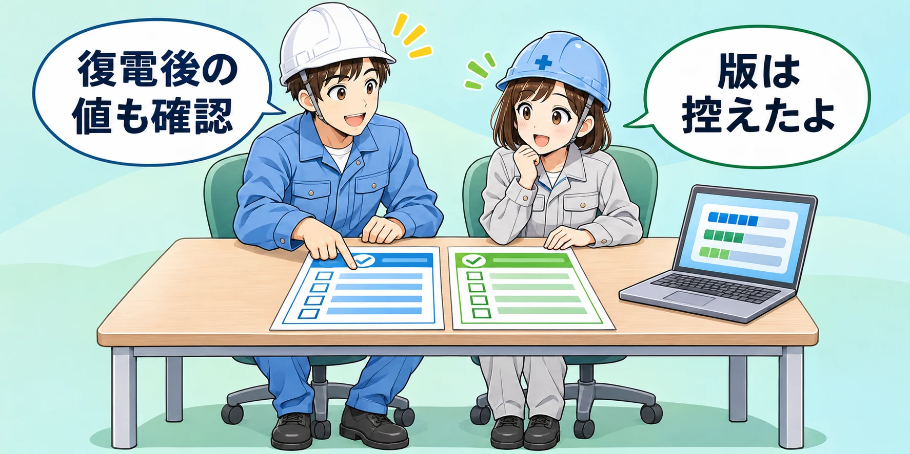

交換前に見る3つのポイント
先に結論：CPUの入出力ケーブルを流用できることと、そのまま設備が動くことは別です。 まず銘板の末尾まで確認。次に、既存の入出力がどの機器・中継端子につながっているかを控えます。そのあと、旧プロジェクトと変換後の設定・プログラムを照らし合わせます。
対象は三菱電機の FX3GC-32MT/D・FX3GC-32MT/DSS を、同じ末尾の FX5UC-32MT/D・FX5UC-32MT/DSS に替える場合です。似た名前の FX3UC とは別です。この記事は停止前の事前調査と引き継ぎ用で、設備の配線図や安全確認の代わりにはなりません。

後輩同じコネクタが使えるなら、プログラムもそのままですか？

先輩そこは別々に確認しよう。配線がつながることと、PLCが同じように数えたり通信したりすることは別だよ。
停止時間を見積もるときは、機器を取り替える時間だけでなく、設定・初期値を照合する時間も分けて考えます。旧機を外してからでは調べ直せないことがあるので、今の資料で分かることと、設備担当者の確認が必要なことを先に分けておくのがこのシートの狙いです。
1. 銘板とケーブルを見比べる

旧：FX3GC のCPU入出力
↓ 入出力ケーブルは流用候補
新：FX5UC のCPU入出力
旧：GX Works2 の元データ
↓ 変換後に設定と参照先を確認
新：GX Works3 の作業データ
| いま使っている型式 | 三菱電機の推奨代替型式 |
|---|---|
| FX3GC-32MT/D | FX5UC-32MT/D |
| FX3GC-32MT/DSS | FX5UC-32MT/DSS |
メーカーの対象型式一覧では、生産終了は2026年12月。三菱電機のFAQ 44307は、FX3GC基本ユニットで使用した入出力ケーブルを、コネクタ型のFX5UC CPUユニットへ流用できると案内しています。これは CPU側の入出力ケーブル の話です。電源ケーブル、増設機器、通信アダプタ、盤内の取付寸法まで一緒に流用できるという意味ではありません。
交換前に、盤図と現物の札から「機器 → 中継端子・リレー → 線番 → CPU側の位置／X・Y」を控えます。交換後も同じ経路なら「流用」と記入し、変わるところだけ新側の列に書くと、別の担当者が図面を開いたときに探しやすくなります。
見積もり前に揃える4点
| 先にそろえる資料 | この情報があると決められること |
|---|---|
| 旧CPU・増設機器の銘板 | 代替型式と、ケーブル以外に必要な部材 |
| 盤図・I/O表・中継端子の記録 | 旧のつなぎ先を残せるか、図面の読み替えが要るか |
| 現行のプロジェクトと設備側の版 | 保管の古いコピーを誤って変換していないか |
| 現在使っている品種・設定値の控え | 変換後の設定と、復電後に設備が期待する値を比較できるか |
たとえば盤図に「搬送端検出 → X6」としかない場合、X6の文字だけを新側に書いても、実際にどの端子を経由しているかは伝わりません。説明用の記入例なら「搬送端検出／中継TB-06／線番116／旧X6」と経路まで残し、新側は図面と現物が一致してから欄を埋めます。線番や端子名は仮の例で、FX5UC共通の結線例ではありません。
2. 変換後のプロジェクトを点検する
元のGX Works2プロジェクトは上書きせずに残し、変換後のGX Works3プロジェクトとは別名で保管します。変換が終わっただけでは合格ではありません。変換結果を保存し、警告や未対応箇所を記録したうえで、実際に使っている機能から当たりをつけます。
| 旧側で使っていたもの | 新側で先に確認するもの |
|---|---|
| 高速カウンタ C235～C255 | 対応する高速カウンタ設定と、それを使うプログラム |
| ルーチンタイマ T192～T199 | ルーチンタイマの使用設定と先頭デバイス |
| 停電後も残したい品種設定・設定値 | 旧機で使っている番地と値、新側の番地・保持設定・復電後に期待する値 |
| RS-485／RS-232C | 相手機器、アダプタ、通信チャンネル、設定と命令内のチャンネル指定 |
| 増設I/Oや特殊機器 | 実際の型式、接続可否、割付、置き換えた場合のプログラム側の参照 |
FX3GC では、電池なしで停電時に保持されるデータレジスタは D128～D1099 です。FX5UC では GX Works3 の CPU パラメータでラッチ範囲を確認します。たとえば旧機で D200 に品種番号を残していたとしても、新機で同じ番地や値が残るとは限りません。変換後のプログラムとは別に、旧機で使われていた値、新側の書き込み先、復電直後に期待する値を記録します。D200 は説明用の例です。
プログラム・設定・今の値を分ける

ラダーは「何を条件に、どの処理をするか」、パラメータは「その機能をどう使うか」、現場の設定値は「この設備でいま何を選んでいるか」です。たとえば品種が切り替わらないとき、ラダー上のデバイス番号が合っていても、初期値や画面側の参照が違うことがあります。旧プロジェクトと変換結果だけでなく、旧設備で確認した値や表示も記録に残します。
GX Works3のクロスリファレンスは、番地がどこで読まれ、どこで書き換えられるかを調べるのに向いています。ただし、ラダー内で検索して見つからない場合でも、タッチパネルなどPLCの外部から書き込まれていないとは言えません。必要なら表示器側のプロジェクトや通信表も照合し、最後まで分からないものは未確認に残します。
使っていない機能は「未使用」、確認できないものは「未確認」と書き分けます。「記入欄が空いているから問題なし」とは判断しません。
3. 失敗例（説明用）：入力は見えるのにカウントが増えない
①だけ通っても、②と③が合っているとは限りません。
仮に、旧FX3GCでエンコーダを高速カウンタに入れていた設備を考えます。置き換え後に入力の動きが見えても、表示カウントが増えません。この時点で「エンコーダが壊れた」とも「プログラムだけ直せばいい」とも断定できません。入力の確認は、高速カウンタが意図した条件で数えていることまで保証しないからです。
- 旧プロジェクトで、使っていたカウンタ番号と、その値を見にいく箇所を見つける。
- 新プロジェクトで、対応する入力割付・カウンタ設定と、変換後の参照先がそろっているかを別々に確認する。
- 不明点は、旧・新の値が比較できる形で担当者へ引き継ぐ。設備を動かして試す前に、承認された検証手順で確認する。
後輩入力が見えたからって、カウントまで通ったわけじゃないんですね。
先輩そう。『どこまで確認できたか』を書いとけば、次の人が同じところを測り直さずに済むよ。
もう一例：通信できないとき、ケーブルだけを疑わない
置き換え直後に表示器の数値だけ更新されない場面を想定します。まず「PLC内部の値も更新されない」のか、「内部の値は動いているが、表示器だけが追っていない」のかを分けます。後者なら、配線の記録に加えて、通信アダプタやチャンネル、表示器が読むデバイスの対応が、旧と新でそろっているかが確認の手がかりになります。
| 見えたこと | 次に照合するもの |
|---|---|
| 入力は見えるがカウントが変わらない | 高速入力の割付、カウンタ設定、ラダーで読んでいる先 |
| PLC内部の値は動くが、表示が更新されない | 相手機器・通信チャンネル・表示器側の参照 |
| 復電後だけ品種が違う | 旧の実値、新の保持範囲、起動時に値を書く処理 |
症状は確認順を決める手がかりで、原因の確定ではありません。現場での検証や試運転は設備ごとの安全手順に従い、必要な隔離と立会いを取って担当者が行います。
4. 記録を一枚にまとめる
シートの見本を見る

確認シートは、上段で新旧の型式・プロジェクトを、真ん中で入出力の実際の経路を、下段で機能と設定値を対にして記録します。標準にない値を書ける空欄も用意。設備全点は既存のI/O表で管理し、このシートには変更点・要確認点と別紙の図番を残します。
引き継ぎ前に「ここまでは確認済み」をそろえる
シートを渡すときは、旧プロジェクトと変換後のファイル名、参照した図面の版、未確認の項目を一緒に伝えます。とくに「配線は照合済み、表示器の参照先は未確認」のように範囲を分けると、次の担当者が同じ箇所を一から調べ直さずに済みます。旧機のデータやファイルは変換版で上書きせず、社内ルールに沿って保管します。
記入したシートは設備資料として社内で扱ってください。このページから送信する機能はありません。
三菱電機の公式資料
参考資料（確認日：2026年11月27日）